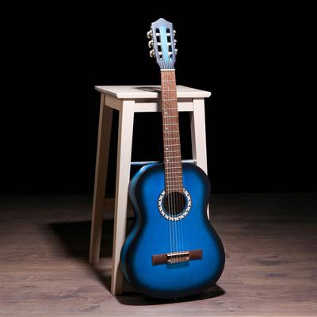
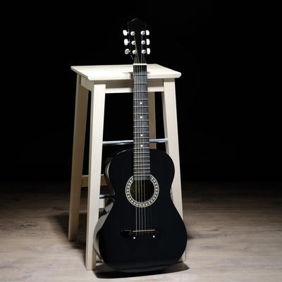
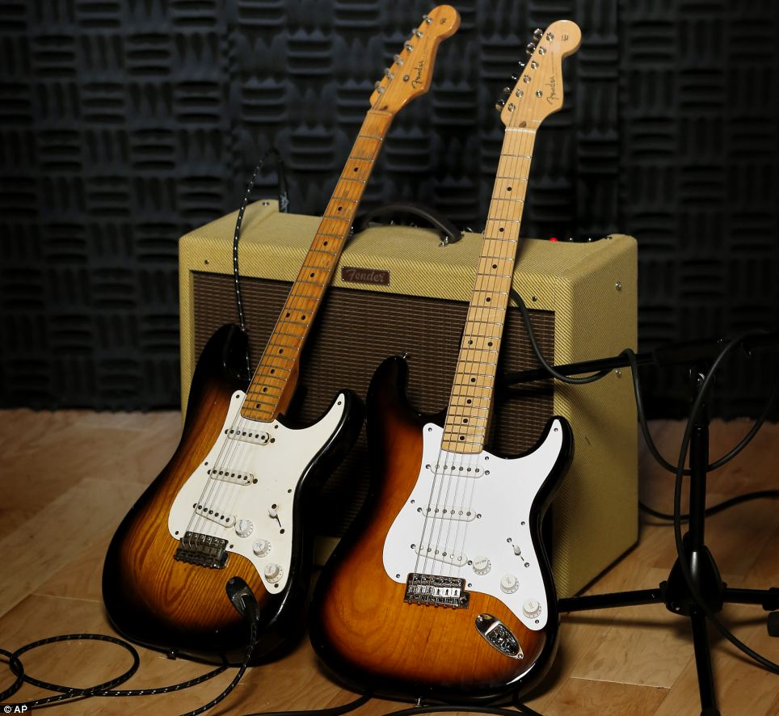
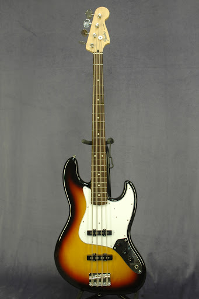

Классическая гитара
 Основной представитель семейства гитар в целом, и акустических гитар в частности. В современном виде существует со второй половины XVIII века, используется как сольный, ансамблевый и аккомпанирующий инструмент. Гитара обладает большими художественно-исполнительскими возможностями и широким разнообразием тембров. Классическая гитара имеет ряд особенностей:Это акустический инструмент. Звук усиливается лишь деревянным корпусом гитары. Это акустический инструмент. Звук усиливается лишь деревянным корпусом гитары. Используются струны из синтетики: нейлона, реже — карбона.
Акустическая гитара
 Акустическая гитара — струнный щипковый музыкальный инструмент (в большинстве разновидностей с шестью струнами) из семейства гитар, звучание которого осуществляется благодаря колебанию струн, усиливаемому за счёт резонирования полого корпуса. Акустическая гитара является основным инструментом таких жанров, как авторская песня, фолк, занимает важное место в цыганской и кубинской народной музыке, роке, блюзе и других жанрах. Название «Акустическая» не может трактоваться двояко: оно означает способ звукоусиления резонирующим корпусом инструмента, без использования электричества.
Электрогитара
 Электрогитара — струнно-щипковый электрический музыкальный инструмент, разновидность гитары, имеющая электромагнитные звукосниматели, преобразующие колебания металлических струн в колебания электрического тока. Сигнал со звукоснимателей может быть обработан для получения различных звуковых эффектов и усилен — для воспроизведения через акустическую систему. Слово «электрогитара» возникло от словосочетания «электрическая гитара».
Бас-гитара
 Бас-гитара (электрическая бас-гитара или просто бас) — струнно-щипковый электрический музыкальный инструмент, предназначенный для игры в басовом диапазоне. На нём играют преимущественно пальцами, но допустима и игра медиатором. В сочетании с ударной установкой создаёт ритм-секцию. Электрическая бас-гитара внешне и конструктивно схожа с электрогитарой но имеет более массивный корпус и гриф, а также бо́льшую мензуру.